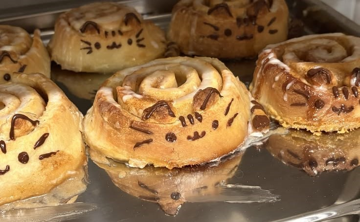

Натуральный состав
Используем фермерское сливочное масло, бельгийский шоколад и свежие ягоды без искусственных добавок.
Свежая авторская выпечка, макароны и торты на заказ
Каждый день мы выпекаем нежные булочки, воздушные эклеры и фирменные десерты с котиком Pusheen из натуральных ингредиентов.
Мы работаем ежедневно с 09:00 до 20:00.
Оформить предзаказ
Используем фермерское сливочное масло, бельгийский шоколад и свежие ягоды без искусственных добавок.
Первая партия фирменных булочек Pusheen выходит из печи ровно к открытию в 09:00.
Принимаем индивидуальные заказы на праздничные торты и подарочные наборы макарон.